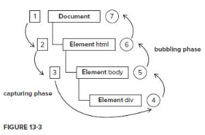

# Dom事件监听
### 1 捕获与冒泡
捕获是从上到下, 冒泡是从下到上的过程

### 2 Dom0级事件监听
```
oDiv.onclick = function(){
}
```
Dom0 级事件绑定方法, 只能监听冒泡阶段. this是指触发事件的元素.
** 在IE9、Chrome里面，事件会冒泡到window对象，而IE6、7、8仅仅冒泡到document对象 **
** 用DOM0级添加事件监听，同一个元素不能有两个同样事件监听，比如： **
```
// 后面的事件会覆盖前面的
box1.onclick = function(){
alert("哈哈");
}
box1.onclick = function(){
alert("嘻嘻");
}
```
### 3 DOM2级事件绑定 addEventListener();
```
<script type="text/javascript">
/**
* 3个参数
* @para1 事件名称
* @para2 事件处理函数, 可以是匿名函数, 也可以是有名函数
* @para3 是否监听捕获阶段 true表示监听捕获、false表示监听冒泡阶段
*/
oBox.addEventListener("click",function(){
},false)
</script>
```
>* Dom2级事件中 this 是触发事件的元素
>* 对同一个元素添加多个Dom2级事件时,不会覆盖, 会依次执行
### 4 低版本IE的事件绑定
```
<script type="text/javascript">
/**
* 第一个参数，必须写on，和addEventListener()不一样；
* 第二个参数，就是事件处理函数
* 没有第三个参数，只能监听冒泡。所以和on***写法一样。
*/
box1.attachEvent("onclick", function(){
alert("box1");
});
</script>
```
>* 只能监听冒泡
>* 低版本IE的事件监听attachEvent：事件处理函数里面的this，不是触发事件的这个元素，而是window对象！
>* 同一个事件名的多个监听，会反着执行：
```
box1.attachEvent("onclick", function(){
alert(1);
});
box1.attachEvent("onclick", function(){
alert(2);
});
box1.attachEvent("onclick", function(){
alert(3);
});
// 弹出3、2、1。
```
### 5 绑定事件监听的轮子
```
<script type="text/javascript">
/**
* 事件监听轮子
* @obj 需要绑定事件监听的元素
* @type 事件类型
* @cb 事件处理函数
*/
function addEvent (obj,type,cb) {
if(obj.addEventListener){
obj.addEventListener(type, cb)
}else if(obj.attachEvent){
obj.attachEvent("on"+type,function(){
cb.call(obj);
})
}else{
obj["on"+type] = cb
}
}
</script>
```
### 6 preventDefault() 阻止默认事件
```
event.preventDefault();
```
### 7 stopPropagation() 停止传播事件流
```
event.stopPropagation();
```